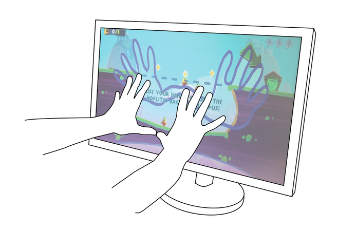
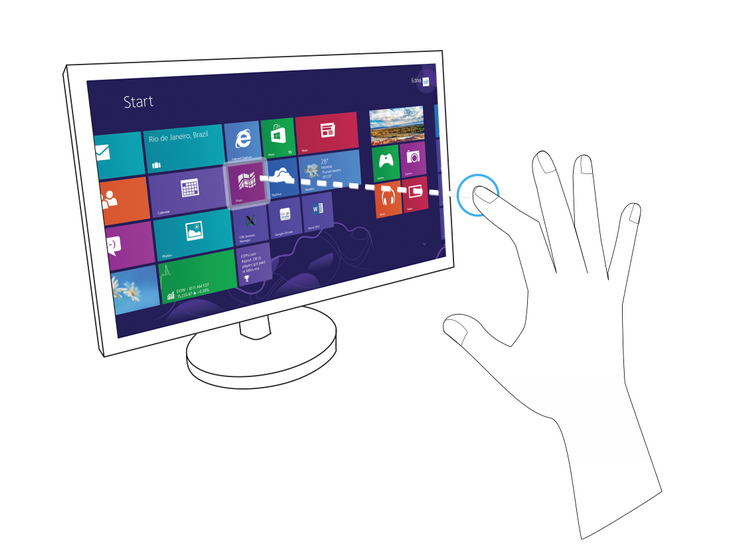

|
There are many possible ways to use the blob modules. A few examples are:
| • | Displaying the object’s silhouette as a visual feedback. In this case you can use the segmentation image as an overlay in the application, in order to show where the required object is located at any given time. |
| • | Converting a specific blob-point to a mouse cursor on the screen. You may track the closest point of the blob and convert it into screen coordinates, in order to control a mouse-like cursor. |
| • | Using the object’s contour as a physical border in a game. Transforming a contour line into a physical game asset may be helpful for many cases, such as hitting a flying ball, collecting falling water, controlling the movement of characters (by blocking their way), and more. |
| • | Cutting out an object from the color image using its segmentation image. This can be useful for AR applications, where you want to manipulate specific objects only. |
| • | Detecting a “mouse-hover” like event, when the tracked blob covers a UI button on the screen. In this case you may want to count the number of blob pixel that cover the button area, and decide if the button is selected according to the percentage of covered pixels. |
Figure 26 and Figure 27 are visual examples that illustrate some of the mentioned use cases:

Figure 26: Using Blob contour as physical border in a game

Figure : Converting closest Blob point to cursor's screen coordinates
|